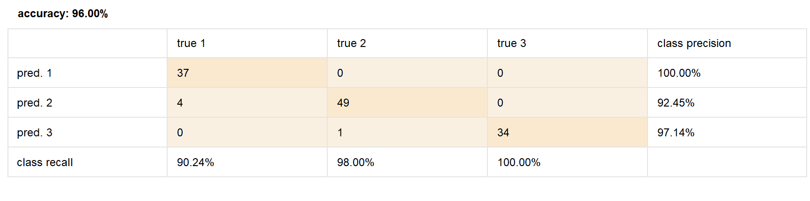
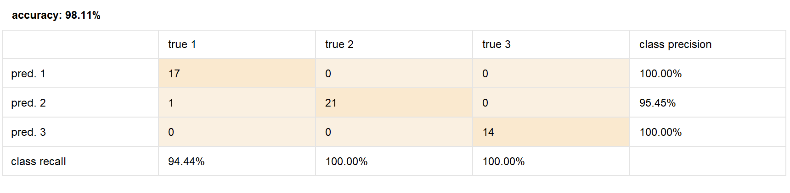

Practical Assignment 1
Exercise 1
Handling Missing Values:
I noticed that there were many attributes with missing data. First, I used the
“Select
Attributes” tool to hide/remove the attributes that were not important for this
tutorial.
Then, with the “Replace Missing Attributes” tool, I replaced the missing values with
the
median. Finally, with “Filter Examples”, we eliminated all the rows that still had
missing
columns.
Normalization and Outlier Detection:
I started by importing the dataset, then I removed some attributes that were not
important.
After that, we normalized the data to be able to apply distance-based algorithms.
We then connected the operator to detect outliers, linked it, and added the operator
“Filter
Examples,” where we set the outlier values to false.
Exercise 2
The first problem I encountered was that after downloading the dataset, it was not
downloaded as a CSV but as a .data file.
This was the first time I downloaded a dataset in this format, so I opened it in
Excel to
convert it to CSV.
I noticed that the attribute names were missing, so I looked them up in the
description and
added them. Finally, I exported it as a CSV and opened it in RapidMiner.
Problem:
Determine the origin of the wine based on the provided data.
Attributes:
- Wine class: Type of wine (1, 2, or 3), corresponding to the region of origin.
- Alcohol: Percentage of alcohol in the wine.
- Malic acid: Chemical compound contributing to the wine’s acidity.
- Ash: Mineral residue remaining after burning the wine.
- Alkalinity of ash: Measure of the alkalinity (ability to neutralize acids) in the ash.
- Magnesium: Magnesium content in the wine, in parts per million (ppm).
- Total phenols: Total amount of phenols, compounds affecting the flavor and color of the wine.
- Flavanoids: A subgroup of phenols, important for the flavor and color of the wine.
- Nonflavanoid phenols: Phenols that do not belong to the flavonoid group.
- Proanthocyanins: Tannins present in wine, affecting the flavor and color.
- Color intensity: The intensity of the wine’s color.
- Hue: Tone of the wine’s color.
- OD280/OD315 of diluted wines: Absorbance of diluted wine at 280 nm and 315 nm, a measure related to the phenol content.
- Proline: An amino acid that is a quality marker in wine.
RapidMiner shows in the statistics section that there are no missing values. It is also observed that there are no outliers, as there is no evidence in the bar charts indicating their presence.
Confusion Matrix Results:
After following the steps, I obtained the confusion matrix for both cases:
The confusion matrix is a table showing the performance of a classification model by comparing the predictions with the true labels, detailing true positives, false positives, true negatives, and false negatives for each class.
Class recall: It measures the proportion of positive instances correctly identified by the model, calculated as true positives divided by the sum of true positives and false negatives.
For the unnormalized/standardized dataset:

In general, the model had an accuracy of 96.00%
For class 1 (pred1), we see that Naive Bayes had 100% accuracy, meaning it always
predicted
that the wine belonged to class 1 (vineyard 1) based on its characteristics.
For class 2 (pred2), the model achieved 92.45% accuracy and confused class 2 with
class 1 on
four occasions.
For class 3, the model achieved 97.14% accuracy, misclassifying class 3 as class 2
once.
For the normalized and standardized dataset:

The model, after being normalized and standardized, achieved an accuracy of 98.11%.
It only
misclassified class 2 as class 1 on one occasion.
Conclusion:
Preprocessing using normalization and standardization improved the model’s accuracy
from
96.00% to 98.11%. The precision and recall also increased, especially in class 1 and
class
2, indicating that the model’s classification ability improved, reducing errors.